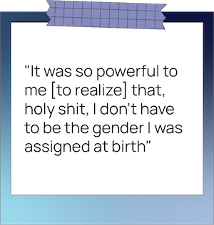
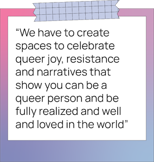

.jpg)
“This is a popular movie that people online are talking about, it has to be good,” Krimus remembered thinking. “I felt like it was normal for someone that’s a lot older than you to ‘show you around’...I thought maybe this is how things are supposed to happen.”
Krimus isn’t the only one who’s considered the ethicality of the acclaimed queer film. Much discourse exists online, weighing the legal age of consent, predatory stereotypes about gay men, the author's intention and everything in between.
Things aren’t black and white when it comes to the representation of queer love onscreen, but some Ryerson students say it’s worth examining the impacts these mainstream portrayals have on their own identities. While for some seeing blockbuster queer representation is a means of discovery, for others the lack of nuance can do more harm than good.

“The mainstream [tends to] have very limited narratives in terms of queer lives,” said Jess Murwin, a Montreal-based Indigiqueer artist, film programmer and educator. They said these portrayals often rely on queerness as a “spectacle” rather than an authentic lived experience, viewing LGBTQIA2S+ narratives through a voyeuristic lens.
But for individuals like third-year financial mathematics student Charlie Dee, these limited narratives were all they had when learning about their identity. Dee was sheltered from queer culture as a child, without much exposure to different sexualities or gender identities. So when they watched Ace Ventura: Pet Detective at age nine, Dee was enthralled by Sean Young’s character, Lieutenant Lois Einhorn, who was revealed to be trans in a scene where her clothes are ripped off. While this “twist ending” villainized Einhorn’s transness by painting her as a liar, it still introduced Dee to trans and non-binary identities.
“It opened up this whole world of possibilities for me,” Dee said. “She was the seductress, she was this powerful woman…it was so powerful to me [to realize] that, holy shit, I don’t have to be the gender I was assigned at birth.”
Marusya Bociurkiw, a professor of media theory at Ryerson and co-director of The Studio for Media Activism and Critical Thought, says media is a two-way street—we inform media as much as it informs us. “I would contest the idea of there being a positive or negative portrayal because it really depends on the particular person watching,” she said. With a lack of queer representation in dominant media, queer audiences have often had to “read between the lines” according to Bociurkiw.
“We negotiate it and we make it work for us, we take certain things and we reject others.”
One of the ideas Dee slowly learned to reject was the idea that trans people are “villains.” “Where I started to embrace that I wasn’t cisgender, I kind of thought I had to become evil in a way,” they said. Beyond Ace Ventura, trans characters have been cast in a negative and dangerous light in many major horror films, like Psycho, Silence of the Lambs, Texas Chainsaw Massacre and Dressed To Kill. In fact, a GLAAD analysis of transgender characters on U.S. TV during 2002 to 2012 found that more than half of those representations were negative.
For some students, social media plays a role in their consumption of queer stereotypes. While fourth-year media production student Morgan MacLeod noticed common tropes in popular queer films like Carol and Blue Is the Warmest Colour, she’d still find herself reblogging content about the films on Tumblr. “They became a cultural moment where you just feel like you have to like it like everyone else,” she said. While MacLeod never cared for the sort of queer portrayals that involved large age gaps, cheating plotlines and tragic endings, they still stuck with her and made her nervous to pursue actual queer relationships.
 “It created more stress for me, just by seeing all these extra factors come into play. It made me feel like there’s never just a happy, normal, [queer] relationship,” she said. “It probably held me back from exploring dating sooner because it created a whole other layer of pressure.”
Murwin said while toxic relationships and dynamics exist in the queer community, the oversaturation of those kinds of stories is where the problem lies. “When those are the type of major queer stories that we’re putting forward, it can really mess people up,” they said. For that reason, they say festivals like the Toronto Queer Film Festival have policies against programming films that can be considered “trauma porn”—media that glorifies traumatic moments of adversity.
“We have to create spaces to celebrate queer joy, resistance and narratives that show you can be a queer person and be fully realized and well and loved in the world,” Murwin said. They believe diverse queer narratives will come only when the reins of movie-making power are transferred to marginalized groups, rather than white, cis male directors who try to “give a voice to the voiceless.”
GLAAD’s annual “Where We Are on TV” report found that in 2021, people of colour comprised 53 per cent of the LGBTQIA2S+ characters on the broadcast series studied—the first time there were more racialized queer characters than white queer characters in the report’s 16-year history.
However, this representation can be largely attributed to a select few queer Hollywood heavyweights and allies, including Greg Berlanti, Lena Waithe, Ryan Murphy and Shonda Rhimes, GLAAD’s study reported. In 2020, 17 per cent of all LGBTQIA2S+ characters were from their 16 shows.
“There are so many people who could be making amazing, beautiful, weird, cool, original films that move beyond what we're doing right now,” Murwin said. “It’s time for something different.”